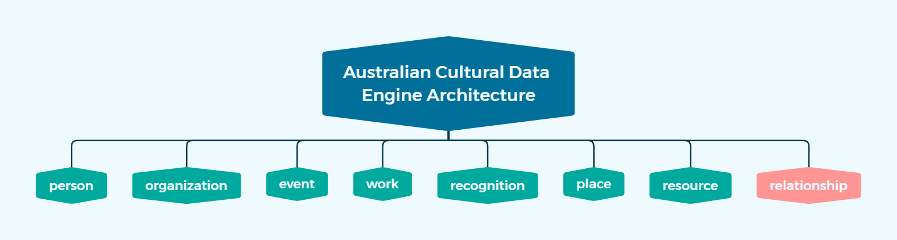

Overview of the Australian Cultural Data Engine Architecture
Overview of the Australian Cultural Data Engine Architecture¶
To construct a unified data model for the Australian Cultural Data Engine, a set of 8 entities were identified from the overlapping entities of all the data models of the current data sources. These entities are collectively referred to as “levels” within the Australian Cultural Data Engine Architecture. The 8 levels include person, organization, event, work, recognition, place, resource, and relationship. These entities were selected based on their relevance to cultural data, and their ability to provide a comprehensive view of the data from the various cultural databases.
The conceptual level diagram below presents the Australian Cultural Data Engine Architecture:

Each level within the ACDEA serves a unique and important purpose in the overall model. Additionally, each level contains three essential types of data:
The metadata of the record, including the original (database) ID, URL, associated level name, timestamps, and other important details. This metadata is crucial in maintaining the integrity and traceability of the data.
The specific content details of the record.
The one-dimentional related records of the particular record refer to its direct connections to other records within the same level. This feature provides easier access to the one-dimensional relationship network of a particular record, while all relationship records can be found in the relationship level.
The content detail summary of each level are described as follows:
Person Level: representing individuals who are relevant to the cultural data.
Names: all types of names of the person, including display name, primary name and alternative names.
Summary: the biography summary of the person
Gender
Birth: the date and place of birth
Death: the date and place of death
Long Term Roles: the roles that the individual has held for an extended period of time.
Career: the features about career.
Residences: the time and place of the person has resided.
Languages
National Library Archive ID: The ID assigned by the National Library of Australia for the same individual.
Organization Level: representing organizations that are relevant to the cultural data.
Names: all types of names of the organization, including display name, primary name and alternative names.
Description: the brief description of the organization.
Types: the types of the organizations.
Long Term Roles: : the roles that the organization has held for an extended period of time.
Operation: the features about operation of the organization.
Locations: the places where the organization has been located.
Event Level: representing cultural events.
Title
Description: the brief description of the event.
Types: the types of the events.
Time & Place: the specific date and location where the event took place.
Work Level: representing cultural works such as books, architecture, performance , art, and etc.
Titles: all types of titles of the work, including primary title and alternative titles.
Summary: the summary of the work.
Time & Place: the specific date and location where the work was created.
Recognition Level: representing awards or recognition received by individuals or organizations.
Title
Summary: the summary of the recognition.
Types: the types of the recognition.
Time & Place: the specific date and location where the recognition was granted.
Place Level: representing the locations that are geographic locations or facilities where the cultural events take place.
Names: all types of names of the location, including primary names and alternative names.
Address: the standardized physical address of the location, including country, state, suburb, street and postcode.
Geo-Coordinates: the geographic coordinates (latitude and longitude) of the locations.
Start & End Date (Optional): the start and demolished date of a location, which is the optional information in tracking the changes of a location whose type is “venue” over time.
Resource Level: represents resources that are relevant to the cultural data, such as books, images, paintings and audio files. The content details of this level refer to the metadata schema used in the National Library of Australia.
Titles: all types of titles of the resource, including primary title and alternative titles.
Description
Type
Authoring: the author or creator information of the resource.
Source: the source of the resource.
Date: the associated dates of the resource, such as created date, published date, etc.
Acquisition: the method or process used to acquire the resource.
Right: the rights associated with the resource, such as copyright or licensing information.
Format: the format information of the resource.
Identifier: the identifiers associated with the resource.
Relationship Level: representing the relationships between the various entities within the cultural data. It plays a crucial role in establishing connections and dependencies between the other levels.
Subject: the entity that initiates the relationship.
Object: the entity that is being related to by the subject.
Predicate: describing the type of relationship that exists between the subject and the object.
Time: the time period during which the relationship between the subject and the object existed.
The following illustration shows an overview of the attributes in ACDEA.

To obtain more detailed information about the specific attributes within each level, please refer to the ACDEA data dictionary. The data dictionary can be downloaded below.